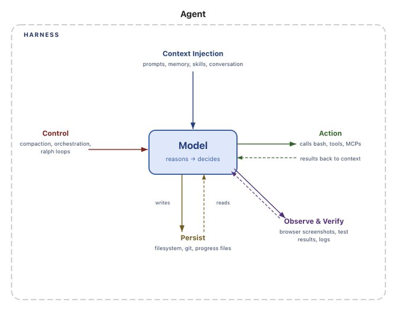
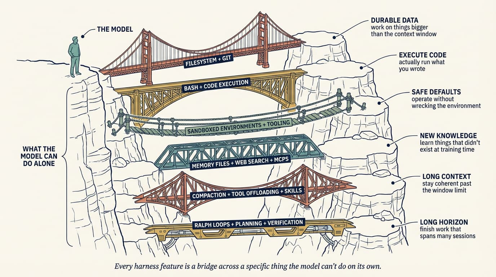

![Acceler]()

Day 4 Recap
AI-Assisted Development Program
Day 4 of 4 · 17 July 2026
Day 3 was about not trusting AI-written code until it earned it. Day 4 zoomed out: what you're actually building around the model (the harness), how far you can push that from one agent to a fleet (orchestration), and what any of this costs you once it's running in production, not just while it's shipping.
The scaffolding you build around the model, and why it's not optional
CLAUDE.md, AGENTS.md, skill files, subagent prompts), tools & MCP servers, bundled infrastructure (filesystem, sandbox, browser), orchestration logic (subagent spawning, handoffs, model routing), hooks & middleware (deterministic execution: compaction, continuation, lint checks), and observability (logs, traces, cost, latency).
The harness, end to end: context goes in, the model reasons and decides, and everything else (control, action, persistence, verification) is scaffolding around it.

Every harness feature is a bridge across a specific thing the model can't do on its own.
From one agent to a fleet: subagents, agent teams, and dynamic workflows
CLAUDE_CODE_EXPERIMENTAL_AGENT_TEAMS=1.AGENTS.md for compound learning). Practical limits that keep it running: 3–5 agents as a WIP sweet spot, a kill criterion (stuck 3+ iterations on the same error → stop and reassign), and one file, one owner: never let two agents edit the same file.AGENTS.md for compound learning (every session reads it and updates it).Shipping fast is the cheap part; running it is where the money goes
CLAUDE.md plus only the files a task touches, not the whole repo, the big one), dynamic context (skills and tool calling, MCP servers, pulling context on demand instead of carrying it all), and intelligent model routing (heavy models for requirements/architecture/first implementation, small cheap models for tests/review/CI, for the same output quality at a fraction of the cost).AGENTS.md first and grow it, put tests and evals before the code. For leaders: the eval is the bar, not the demo. Gate shipping on eval coverage the way you gate deployment on test coverage. For organizations: fund the harness as engineering investment, not overhead. Skip the scaffolding and you buy speed without quality, debt that compounds.Day 4 didn't run a scored quiz like the earlier days; this was the session's own live discussion check instead, put here properly since the deck's own "answer" slide was left blank for the instructor to take live.
Prompts, tools, infrastructure, and control logic are a real system: designed, versioned, and reviewed, not an afterthought around the model.
Context rot, tool overload, brittle wiring, and missing guardrails are the failure modes that actually show up in production.
That single architectural difference is what decides token cost and what kind of work each pattern is actually good for.
In the Factory Model, the human's job shifts from writing code to writing specs and checking output: that's where the real time goes now.
A tight payload, dynamic context, and model routing are the three levers that actually move a token bill, and they compound.
Good engineering discipline gets amplified by AI. So does bad discipline. The harness is what decides which one you get.
CLAUDE_CODE_EXPERIMENTAL_AGENT_TEAMS=1 | Enable agent teams (in settings.json or your environment) |
/agents | List every available subagent: project, personal, and built-in |
ultracode (in a prompt) / /effort ultracode | Have Claude write and run a dynamic workflow for the task, instead of working turn by turn |
/workflows | See running and completed dynamic workflows, drill into a phase or agent |
/context | Read the context window meter: what's actually loaded right now |
/cost | Read token spend for the session, including cache-read savings |
/plugin marketplace add · /plugin install | Discover and install ready-made plugins that extend Claude Code |
| Git worktrees | Give each parallel agent its own worktree: no merge conflicts, clean integration |
All four live in one repo: TaskFlow, a deliberately small Express API with real seeded bugs. Same repo covers all four program days.
Clone just today's demo out of the shared repo:
git clone --filter=blob:none --no-checkout https://github.com/nsr-19/acceler-lvt-labs.git
cd acceler-lvt-labs
git sparse-checkout init --cone
git sparse-checkout set lvt-day4-code-demo
git checkout main
Then cd lvt-day4-code-demo && npm install && npm test: 7 tests, all green on the baseline. Node.js 18+ required; dynamic workflows need Claude Code v2.1.154+ on a paid plan (enable via the Dynamic workflows row in /config on Pro).
Progressive, run in order: each guide lives at demos/0{1,2,3}-.../GUIDE.md in the repo. Demo 1 introduces delegation. Demo 2 removes the single-orchestrator constraint (agent teams, ~25 min). Demo 3 moves the plan out of the conversation into a rerunnable script (~15 min), plus a plugins & worktrees bonus.
A real, installable Claude Code plugin (supermemoryai/claude-supermemory) that automates the CLAUDE.md Learned Rules pattern automatically and across sessions, via a SessionStart hook (injects relevant memories before you type anything) and a PostToolUse hook (captures every edit in the background). Runs self-hosted and free: no account, nothing leaves your machine. The lab has you fix the same PATCH bug from Demo 2 a second time, save the rule with /supermemory:save, then open a completely fresh session and confirm it answers correctly without being told anything. Guide: demos/04-supermemory/GUIDE.md.
Core lab (~30 min) measures three real levers (tight payload, prompt caching, model routing) on the same TaskFlow repo, using nothing but /context and /cost: ~60–70% fewer tokens on the naive-vs-tight comparison. An optional stretch (~20 min) grows the repo for real and re-measures at scale, then fans the same audit out with a dynamic workflow to turn the ratio into an actual priced number.
Five questions, properly answered: some got a fast live answer worth writing down cleanly, the rest genuinely didn't get one on the day.
.claude/rules/ is a real, current part of the .claude directory, separate from the single CLAUDE.md file: topic-scoped instruction files instead of one growing document. A rule with no paths: frontmatter loads at session start, same as CLAUDE.md. A rule with paths: frontmatter only loads when Claude actually reads a matching file, so you can scope a convention to, say, just your frontend or just your test files, and it costs nothing on unrelated tasks. The trigger to reach for it: once CLAUDE.md creeps past roughly 200 lines, start moving sections into rules instead of letting one file keep growing. Like CLAUDE.md, a rule is guidance Claude reads, not something Claude Code enforces; for guaranteed behavior, that's still hooks or permissions.code.claude.com/docs/en/changelog: every release, timestamped, with its new features, improvements, and fixes listed in order. That's the single fastest way to know what shipped and when, and it's worth bookmarking over any secondhand summary. The rest of the docs reinforce it: pages are actively version-tagged against specific releases (you'll see notes like “as of v2.1.199” throughout this very recap's own citations), so a page read months ago may already be stale on one specific behavior even if the general concept still holds. Check the version tag, not just the topic.@code-reviewer doesn't.ultracode in a prompt, or run /effort ultracode to make it the session default, and Claude writes and runs a dynamic workflow for that task instead of working through it turn by turn. Toggle it via /config → Dynamic workflows; if it triggers by accident, Option+W (Mac) or Alt+W (Windows/Linux) right after typing dismisses it.Four days, one throughline: direct the tool with discipline, build gates you can trust, then scale both of those from one session to a fleet without losing track of what it costs.
Same habit as every day before this: this is what you submit, and today closes it out.
The ratio is the lesson, not the exact percentage. Re-run Steps 1–2 on a task from your own codebase and see if it holds.
Subagents for decomposition is the zero-setup starting point if you're not sure which to try first.
The instructors called this out explicitly as something to do after the program; it's in Additional Resources below.
The whole point of AGENTS.md, Supermemory, and the beads pattern from today is that what you learn on one task should still be there the next time you open the repo. Keep updating it after this program the same way you were asked to during it: that's the habit that actually compounds, not the four days themselves.
All 10 multiple-choice questions and both subjective prompts from the post-program assessment, with the full solution and reasoning for each, not just the correct letter.
The slide deck, both lab guides, and the code from the Day 4 live demos.
lvt-day4-code-demoCalled out explicitly in the session as worth sharing post-class.
A mix of what learners and the Acceler team dropped in the Zoom chat during Day 4, worth keeping around.
| Memory Tool docs | Anthropic's official reference: came up answering whether harness memory is embeddings-based or natural language |
| The .claude directory, explained | What lives in .claude/ and why, shared after a learner admitted "it's hard not to look at the files" |
| handoff skill | A short-term-memory skill a learner called out as genuinely useful for context handoff between sessions |
| OpenAI Tokenizer | Quick way to see how text actually splits into tokens, shared during the token-economics discussion |
| mem0 | A YC-backed alternative to Supermemory for persistent agent memory, flagged by a learner mid-lab |
| What Bun's Rust rewrite teaches about AI cost | A real-world TCO case study: Bun's Zig-to-Rust rewrite via Fable, priced in actual tokens and dollars |